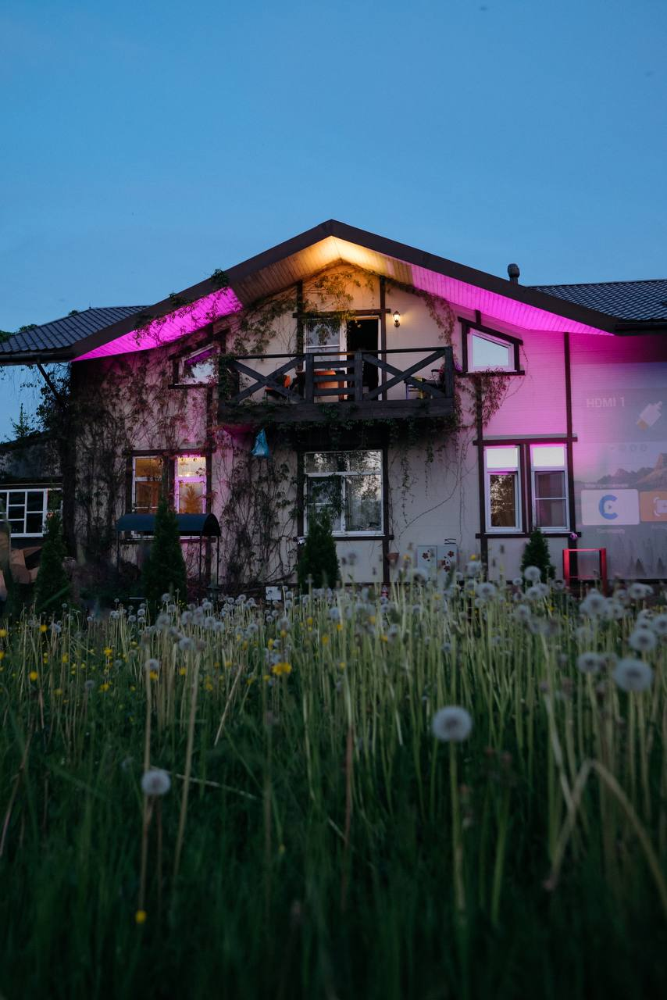

Кинопоказы
Фильм на большом экране, хороший звук, мягкий свет, камин и камерная компания.
Кино / звук / визуальная среда
В Home Lab звук и изображение — не повод для шума, а способ собрать камерный опыт: внимательно смотреть, слушать, обсуждать и работать со средой.
Направление
В зале есть проектор и аудиосистема. Здесь можно провести кинопоказ, прослушивание альбома, музыкальный разбор, аудиовизуальную сессию или спокойный вечер у камина.
Форматы строятся вокруг внимания и атмосферы: небольшой круг людей, хороший звук, мягкий свет, возможность смотреть, слушать и обсуждать без ощущения шумной вечеринки.

Сценарии
Фильм на большом экране, хороший звук, мягкий свет, камин и камерная компания.
Альбом целиком, музыкальный разбор, сет, встреча вокруг звука или спокойный вечер прослушивания.
Небольшие форматы для музыкантов, звукорежиссёров, аудиоэнтузиастов и людей, которым важно слушать внимательно.
Тесты проекций, света, визуальных сценариев и работы пространства как части аудиовизуального опыта.
Встречи, где важны не громкость и масштаб, а атмосфера, разговор, фокус и аккуратное отношение к дому.
Мы не делаем формат вокруг громкой ночной музыки и хаотичного отдыха. Звук и изображение здесь работают на внимание, а не на шум.